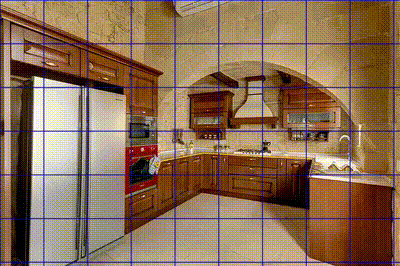

<table width="100%" align="center" border="0" cellspacing="0" cellpadding="20">
  <tr onmouseout="attwarp_stop()" onmouseover="attwarp_start()" >
    <td width="35%">
      <div class="one">
        <div class="two" id = 'attwarp'></div>
      </div>
      <script type="text/javascript">
      function attwarp_start() {
      document.getElementById('attwarp').style.opacity = "0.9";
      }
      function attwarp_stop() {
      document.getElementById('attwarp').style.opacity = "1";
      }
      </script>
    </td>
    <td valign="top" width="65%">
      <a href="https://arxiv.org/abs/2510.09741">
      <heading>Constructive Distortion: Improving MLLMs with Attention‑Guided Image Warping
      </heading></a><br>
      Dwip Dalal¹, Gautam Vashishtha², Utkarsh Mishra³, Jeonghwan Kim¹, Madhav Kanda¹, Hyeonjeong Ha¹, Svetlana Lazebnik¹, Heng Ji¹, <strong>Unnat&nbsp;Jain⁴</strong><br>
      <strong>arXiv 2025</strong><br>
      <a href="https://arxiv.org/pdf/2510.09741.pdf">paper</a>
      | <a href="https://dwipddalal.github.io/Attwarp/">project</a>
      | <a href="https://github.com/dwipddalal/Attwarp">code</a>
    </td>
  </tr>
</table>
